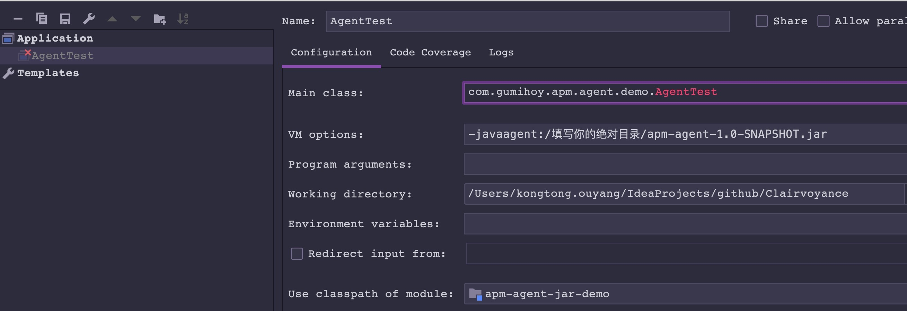
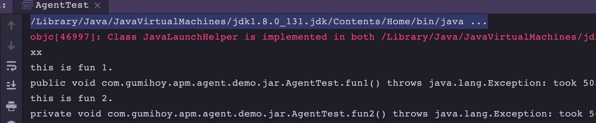

<!DOCTYPE html>
<html>
<head><meta name="generator" content="Hexo 3.9.0">
  <meta charset="utf-8">
  
  <title>Java Agent详解 | Hexo</title>
  <meta name="viewport" content="width=device-width, initial-scale=1, maximum-scale=1">
  <meta name="description" content="Java Agent就是利用 Java5 提供的 Instrumentation 机制。 在 Java SE 5 中，Instrument 要求与应用一块启动（设置参数启动 -javaagent:agent.jar ） 在 Java SE 6 里面，Instrumentation 被赋予了更强大的功能：启动后的 instrument、本地代码（native code）instrument，以及动态">
<meta name="keywords" content="Java,JavaAgent">
<meta property="og:type" content="article">
<meta property="og:title" content="Java Agent详解">
<meta property="og:url" content="https://gumihoy.github.io/2019/08/13/Java-Agent详解/index.html">
<meta property="og:site_name" content="Hexo">
<meta property="og:description" content="Java Agent就是利用 Java5 提供的 Instrumentation 机制。 在 Java SE 5 中，Instrument 要求与应用一块启动（设置参数启动 -javaagent:agent.jar ） 在 Java SE 6 里面，Instrumentation 被赋予了更强大的功能：启动后的 instrument、本地代码（native code）instrument，以及动态">
<meta property="og:locale" content="default">
<meta property="og:image" content="https://gumihoy.github.io/2019/08/13/Java-Agent详解/1565784207465.jpg">
<meta property="og:image" content="https://gumihoy.github.io/2019/08/13/Java-Agent详解/1565786297241.jpg">
<meta property="og:updated_time" content="2019-11-02T07:12:18.094Z">
<meta name="twitter:card" content="summary">
<meta name="twitter:title" content="Java Agent详解">
<meta name="twitter:description" content="Java Agent就是利用 Java5 提供的 Instrumentation 机制。 在 Java SE 5 中，Instrument 要求与应用一块启动（设置参数启动 -javaagent:agent.jar ） 在 Java SE 6 里面，Instrumentation 被赋予了更强大的功能：启动后的 instrument、本地代码（native code）instrument，以及动态">
<meta name="twitter:image" content="https://gumihoy.github.io/2019/08/13/Java-Agent详解/1565784207465.jpg">
  
    <link rel="alternative" href="/atom.xml" title="Hexo" type="application/atom+xml">
  
  
    <link rel="icon" href="/img/favicon.png">
  
  
  <link rel="stylesheet" href="/css/style.css">
  <link rel="stylesheet" href="/font-awesome/css/font-awesome.min.css">
  <link rel="apple-touch-icon" href="/apple-touch-icon.png">
  
  
      <link rel="stylesheet" href="/fancybox/jquery.fancybox.css">
  
  <!-- 加载特效 -->
    <script src="/js/pace.js"></script>
    <link href="/css/pace/pace-theme-flash.css" rel="stylesheet">
  <script>
      var yiliaConfig = {
          rootUrl: '/',
          fancybox: true,
          animate: false,
          isHome: false,
          isPost: true,
          isArchive: false,
          isTag: false,
          isCategory: false,
          open_in_new: false
      }
  </script>
</head></html>
<body>
  <div id="container">
    <div class="left-col">
    <div class="overlay"></div>
<div class="intrude-less">
    <header id="header" class="inner">
        <a href="/" class="profilepic">
            
            
            
        </a>

        <hgroup>
          <h1 class="header-author"><a href="/" title="Hi Mate">Gumihoy</a></h1>
        </hgroup>

        
        
        
            <div id="switch-btn" class="switch-btn">
                <div class="icon">
                    <div class="icon-ctn">
                        <div class="icon-wrap icon-house" data-idx="0">
                            <div class="birdhouse"></div>
                            <div class="birdhouse_holes"></div>
                        </div>
                        <div class="icon-wrap icon-ribbon hide" data-idx="1">
                            <div class="ribbon"></div>
                        </div>
                        
                        
                        <div class="icon-wrap icon-me hide" data-idx="3">
                            <div class="user"></div>
                            <div class="shoulder"></div>
                        </div>
                        
                    </div>
                    
                </div>
                <div class="tips-box hide">
                    <div class="tips-arrow"></div>
                    <ul class="tips-inner">
                        <li>菜单</li>
                        <li>标签</li>
                        
                        
                        <li>关于我</li>
                        
                    </ul>
                </div>
            </div>
        

        <div id="switch-area" class="switch-area">
            <div class="switch-wrap">
                <section class="switch-part switch-part1">
                    <nav class="header-menu">
                        <ul>
                        
                            <li><a href="/">首页</a></li>
                        
                            <li><a href="/archives">全部文章</a></li>
                        
                            <li><a href="/categories">分类</a></li>
                        
                            <li><a href="/tags">标签</a></li>
                        
                            <li><a href="/about">关于</a></li>
                        
                        </ul>
                    </nav>
                    <nav class="header-nav">
                        <ul class="social">
                            
                                <a class="fl github" target="_blank" href="https://github.com/gumihoy" title="github">github</a>
                            
                        </ul>
                    </nav>
                </section>
                
                
                <section class="switch-part switch-part2">
                    <div class="widget tagcloud" id="js-tagcloud">
                        <a href="/tags/Algorithm/" style="font-size: 10px;">Algorithm</a> <a href="/tags/Elasticsearch/" style="font-size: 11px;">Elasticsearch</a> <a href="/tags/Git/" style="font-size: 10px;">Git</a> <a href="/tags/Hash/" style="font-size: 10px;">Hash</a> <a href="/tags/Hexo/" style="font-size: 10px;">Hexo</a> <a href="/tags/Homebrew/" style="font-size: 10px;">Homebrew</a> <a href="/tags/Iterm2/" style="font-size: 10px;">Iterm2</a> <a href="/tags/Java/" style="font-size: 14px;">Java</a> <a href="/tags/JavaAgent/" style="font-size: 10px;">JavaAgent</a> <a href="/tags/KNN/" style="font-size: 10px;">KNN</a> <a href="/tags/Kafka/" style="font-size: 10px;">Kafka</a> <a href="/tags/LaTeX/" style="font-size: 10px;">LaTeX</a> <a href="/tags/Mac/" style="font-size: 12px;">Mac</a> <a href="/tags/Markdown/" style="font-size: 10px;">Markdown</a> <a href="/tags/MySQL/" style="font-size: 18px;">MySQL</a> <a href="/tags/MySQL实战45讲/" style="font-size: 17px;">MySQL实战45讲</a> <a href="/tags/NoSQL/" style="font-size: 14px;">NoSQL</a> <a href="/tags/PyTorch/" style="font-size: 10px;">PyTorch</a> <a href="/tags/Python/" style="font-size: 10px;">Python</a> <a href="/tags/RPC/" style="font-size: 10px;">RPC</a> <a href="/tags/Redis/" style="font-size: 14px;">Redis</a> <a href="/tags/SQL/" style="font-size: 11px;">SQL</a> <a href="/tags/SQL转换/" style="font-size: 12px;">SQL转换</a> <a href="/tags/SVM/" style="font-size: 10px;">SVM</a> <a href="/tags/Slow/" style="font-size: 10px;">Slow</a> <a href="/tags/SpringBoot/" style="font-size: 11px;">SpringBoot</a> <a href="/tags/Tensorflow/" style="font-size: 10px;">Tensorflow</a> <a href="/tags/Thrift/" style="font-size: 10px;">Thrift</a> <a href="/tags/Tomcat/" style="font-size: 10px;">Tomcat</a> <a href="/tags/Trace/" style="font-size: 10px;">Trace</a> <a href="/tags/ZooKeeper/" style="font-size: 10px;">ZooKeeper</a> <a href="/tags/中文分词/" style="font-size: 10px;">中文分词</a> <a href="/tags/人工智能/" style="font-size: 14px;">人工智能</a> <a href="/tags/信息熵/" style="font-size: 12px;">信息熵</a> <a href="/tags/信息论/" style="font-size: 12px;">信息论</a> <a href="/tags/全文搜索/" style="font-size: 11px;">全文搜索</a> <a href="/tags/公式/" style="font-size: 10px;">公式</a> <a href="/tags/决策树/" style="font-size: 12px;">决策树</a> <a href="/tags/前馈神经网络/" style="font-size: 10px;">前馈神经网络</a> <a href="/tags/卷积神经网络/" style="font-size: 10px;">卷积神经网络</a> <a href="/tags/微积分/" style="font-size: 11px;">微积分</a> <a href="/tags/排序/" style="font-size: 10px;">排序</a> <a href="/tags/数学/" style="font-size: 16px;">数学</a> <a href="/tags/方差/" style="font-size: 12px;">方差</a> <a href="/tags/期望/" style="font-size: 10px;">期望</a> <a href="/tags/机器学习/" style="font-size: 20px;">机器学习</a> <a href="/tags/极限/" style="font-size: 11px;">极限</a> <a href="/tags/概率与统计/" style="font-size: 13px;">概率与统计</a> <a href="/tags/消息队列/" style="font-size: 10px;">消息队列</a> <a href="/tags/深度学习/" style="font-size: 12px;">深度学习</a> <a href="/tags/深度学习框架/" style="font-size: 11px;">深度学习框架</a> <a href="/tags/监督学习/" style="font-size: 15px;">监督学习</a> <a href="/tags/神经网络/" style="font-size: 13px;">神经网络</a> <a href="/tags/算法/" style="font-size: 19px;">算法</a> <a href="/tags/编译原理/" style="font-size: 10px;">编译原理</a> <a href="/tags/编译器/" style="font-size: 10px;">编译器</a> <a href="/tags/自然语言处理/" style="font-size: 10px;">自然语言处理</a> <a href="/tags/解释器/" style="font-size: 10px;">解释器</a> <a href="/tags/设计模式/" style="font-size: 10px;">设计模式</a> <a href="/tags/词法分析/" style="font-size: 10px;">词法分析</a> <a href="/tags/贝叶斯/" style="font-size: 12px;">贝叶斯</a> <a href="/tags/负载均衡/" style="font-size: 10px;">负载均衡</a> <a href="/tags/高等数学/" style="font-size: 11px;">高等数学</a>
                    </div>
                </section>
                
                
                

                
                
                <section class="switch-part switch-part3">
                
                    <div id="js-aboutme">纯海迷、爱运动、爱交友、爱旅行、喜欢接触新鲜事物、迎接新的挑战，更爱游离于错综复杂的编码与逻辑中</div>
                </section>
                
            </div>
        </div>
    </header>                
</div>
    </div>
    <div class="mid-col">
      <nav id="mobile-nav">
      <div class="overlay">
          <div class="slider-trigger"></div>
          <h1 class="header-author js-mobile-header hide"><a href="/" title="Me">Gumihoy</a></h1>
      </div>
    <div class="intrude-less">
        <header id="header" class="inner">
            <a href="/" class="profilepic">
                
                    
                
            </a>
            <hgroup>
              <h1 class="header-author"><a href="/" title="Me">Gumihoy</a></h1>
            </hgroup>
            
            <nav class="header-menu">
                <ul>
                
                    <li><a href="/">首页</a></li>
                
                    <li><a href="/archives">全部文章</a></li>
                
                    <li><a href="/categories">分类</a></li>
                
                    <li><a href="/tags">标签</a></li>
                
                    <li><a href="/about">关于</a></li>
                
                <div class="clearfix"></div>
                </ul>
            </nav>
            <nav class="header-nav">
                <div class="social">
                    
                        <a class="github" target="_blank" href="https://github.com/gumihoy" title="github">github</a>
                    
                </div>
            </nav>
        </header>                
    </div>
</nav>
      <div class="body-wrap"><article id="post-Java-Agent详解" class="article article-type-post" itemscope itemprop="blogPost">
  
    <div class="article-meta">
      <a href="/2019/08/13/Java-Agent详解/" class="article-date">
      <time datetime="2019-08-13T03:29:09.000Z" itemprop="datePublished">2019-08-13</time>
</a>
    </div>
  
  <div class="article-inner">
    
      <input type="hidden" class="isFancy" />
    
    
      <header class="article-header">
        
  
    <h1 class="article-title" itemprop="name">
      Java Agent详解
    </h1>
  

      </header>
      
      <div class="article-info article-info-post">
        
    <div class="article-category tagcloud">
	    <a class="article-category-link" href="/categories/Java/">Java</a><a class="article-category-link" href="/categories/Java/JavaAgent/">JavaAgent</a>
    </div>


        
    <div class="article-tag tagcloud">
        <ul class="article-tag-list"><li class="article-tag-list-item"><a class="article-tag-list-link" href="/tags/Java/">Java</a></li><li class="article-tag-list-item"><a class="article-tag-list-link" href="/tags/JavaAgent/">JavaAgent</a></li></ul>
    </div>

        <div class="clearfix"></div>
      </div>
      
    
    <div class="article-entry" itemprop="articleBody">
      
          
        <p><code>Java Agent</code>就是利用 <code>Java5</code> 提供的 <code>Instrumentation</code> 机制。
在 <code>Java SE 5</code> 中，<code>Instrument</code> 要求与应用一块启动（设置参数启动 <code>-javaagent:agent.jar</code> ）
在 <code>Java SE 6</code> 里面，<code>Instrumentation</code> 被赋予了更强大的功能：启动后的 instrument、本地代码（native code）instrument，以及动态改变 classpath 等等.</p>
<p><code>Java Agent</code>在不侵入代码字节码注入的方式对应用功能的增强和修改。</p>
<a id="more"></a>
<h2 id="代码实现步骤"><a href="#代码实现步骤" class="headerlink" title="代码实现步骤"></a>代码实现步骤</h2><h3 id="1、代码"><a href="#1、代码" class="headerlink" title="1、代码"></a>1、代码</h3><p><strong>一、以vm参数的方式载入，在Java程序的main方法执行之前执行（JDK1.5和以上）</strong></p>
<figure class="highlight java"><table><tr><td class="gutter"><pre><span class="line">1</span><br><span class="line">2</span><br><span class="line">3</span><br><span class="line">4</span><br><span class="line">5</span><br><span class="line">6</span><br><span class="line">7</span><br></pre></td><td class="code"><pre><span class="line"><span class="comment">// 如果同时存在下面两个方法，第一个方法先执行</span></span><br><span class="line"></span><br><span class="line"><span class="function"><span class="keyword">public</span> <span class="keyword">static</span> <span class="keyword">void</span> <span class="title">premain</span><span class="params">(String arguments, Instrumentation instrumentation)</span> </span>&#123;</span><br><span class="line">&#125;</span><br><span class="line"></span><br><span class="line"><span class="function"><span class="keyword">public</span> <span class="keyword">static</span> <span class="keyword">void</span> <span class="title">premain</span><span class="params">(String arguments)</span> </span>&#123;</span><br><span class="line">&#125;</span><br></pre></td></tr></table></figure>
<p><strong>二、以Attach的方式载入，在Java程序启动后执行（JDK1.6和以上）</strong></p>
<figure class="highlight java"><table><tr><td class="gutter"><pre><span class="line">1</span><br><span class="line">2</span><br><span class="line">3</span><br><span class="line">4</span><br><span class="line">5</span><br><span class="line">6</span><br><span class="line">7</span><br><span class="line">8</span><br></pre></td><td class="code"><pre><span class="line"><span class="comment">// 如果同时存在下面两个方法，第一个方法先执行</span></span><br><span class="line"></span><br><span class="line"><span class="function"><span class="keyword">public</span> <span class="keyword">static</span> <span class="keyword">void</span> <span class="title">agentmain</span><span class="params">(String arguments, Instrumentation instrumentation)</span> </span>&#123;</span><br><span class="line"></span><br><span class="line">&#125;</span><br><span class="line"><span class="function"><span class="keyword">public</span> <span class="keyword">static</span> <span class="keyword">void</span> <span class="title">agentmain</span><span class="params">(String arguments)</span> </span>&#123;</span><br><span class="line"></span><br><span class="line">&#125;</span><br></pre></td></tr></table></figure>
<p><br></p>
<h3 id="2、配置"><a href="#2、配置" class="headerlink" title="2、配置"></a>2、配置</h3><h4 id="打包配置"><a href="#打包配置" class="headerlink" title="打包配置"></a>打包配置</h4><p><code>META-INF/MANIFEST.MF</code>文件必须有以下参数配置
<figure class="highlight java"><table><tr><td class="gutter"><pre><span class="line">1</span><br><span class="line">2</span><br><span class="line">3</span><br><span class="line">4</span><br><span class="line">5</span><br><span class="line">6</span><br><span class="line">7</span><br><span class="line">8</span><br><span class="line">9</span><br><span class="line">10</span><br><span class="line">11</span><br><span class="line">12</span><br></pre></td><td class="code"><pre><span class="line">Manifest-Version: <span class="number">1.0</span></span><br><span class="line"><span class="comment">// JDK1.5，必须与应用一块启动</span></span><br><span class="line">Premain-Class: com.gumihoy.apm.agent.APMAgent</span><br><span class="line"><span class="comment">// JDK1.6, 可以在应用启动之后再启动</span></span><br><span class="line">Agent-Class: com.gumihoy.apm.agent.APMAgent</span><br><span class="line"><span class="comment">// 布尔值（true 或 false，与大小写无关）, 是否能重定义此代理所需的类</span></span><br><span class="line">Can-Redefine-Classes: <span class="keyword">true</span></span><br><span class="line"><span class="comment">// 布尔值（true 或 false，与大小写无关）, 是否能重转换此代理所需的类</span></span><br><span class="line">Can-Retransform-Classes: <span class="keyword">true</span></span><br><span class="line"><span class="comment">// 布尔值（true 或 false，与大小写无关）, 是否能设置此代理所需的本机方法前缀</span></span><br><span class="line">Can-Set-Native-Method-Prefix: <span class="keyword">true</span></span><br><span class="line">空行</span><br></pre></td></tr></table></figure></p>
<blockquote>
<p>最后一行（空行）必须要有</p>
</blockquote>
<p><br></p>
<h4 id="实现方式"><a href="#实现方式" class="headerlink" title="实现方式"></a>实现方式</h4><h5 id="一、Maven"><a href="#一、Maven" class="headerlink" title="一、Maven"></a>一、Maven</h5><p><strong>方法一：使用插件maven-jar-plugin</strong>
只有一个包：</p>
<ul>
<li>agent.jar: 包含第三方jar</li>
</ul>
<figure class="highlight xml"><table><tr><td class="gutter"><pre><span class="line">1</span><br><span class="line">2</span><br><span class="line">3</span><br><span class="line">4</span><br><span class="line">5</span><br><span class="line">6</span><br><span class="line">7</span><br><span class="line">8</span><br><span class="line">9</span><br><span class="line">10</span><br><span class="line">11</span><br><span class="line">12</span><br><span class="line">13</span><br><span class="line">14</span><br><span class="line">15</span><br><span class="line">16</span><br><span class="line">17</span><br></pre></td><td class="code"><pre><span class="line"> <span class="tag">&lt;<span class="name">plugin</span>&gt;</span></span><br><span class="line">    <span class="tag">&lt;<span class="name">groupId</span>&gt;</span>org.apache.maven.plugins<span class="tag">&lt;/<span class="name">groupId</span>&gt;</span></span><br><span class="line">    <span class="tag">&lt;<span class="name">artifactId</span>&gt;</span>maven-jar-plugin<span class="tag">&lt;/<span class="name">artifactId</span>&gt;</span></span><br><span class="line">    <span class="tag">&lt;<span class="name">version</span>&gt;</span>3.1.2<span class="tag">&lt;/<span class="name">version</span>&gt;</span></span><br><span class="line">    <span class="tag">&lt;<span class="name">configuration</span>&gt;</span></span><br><span class="line">        <span class="tag">&lt;<span class="name">archive</span>&gt;</span></span><br><span class="line">            <span class="tag">&lt;<span class="name">manifest</span>&gt;</span></span><br><span class="line">                <span class="tag">&lt;<span class="name">addClasspath</span>&gt;</span>true<span class="tag">&lt;/<span class="name">addClasspath</span>&gt;</span></span><br><span class="line">            <span class="tag">&lt;/<span class="name">manifest</span>&gt;</span></span><br><span class="line">            <span class="tag">&lt;<span class="name">manifestEntries</span>&gt;</span></span><br><span class="line">                <span class="tag">&lt;<span class="name">Premain-Class</span>&gt;</span>com.gumihoy.apm.agent.APMAgent<span class="tag">&lt;/<span class="name">Premain-Class</span>&gt;</span></span><br><span class="line">                <span class="tag">&lt;<span class="name">Can-Redefine-Classes</span>&gt;</span>true<span class="tag">&lt;/<span class="name">Can-Redefine-Classes</span>&gt;</span></span><br><span class="line">                <span class="tag">&lt;<span class="name">Can-Retransform-Classes</span>&gt;</span>true<span class="tag">&lt;/<span class="name">Can-Retransform-Classes</span>&gt;</span></span><br><span class="line">            <span class="tag">&lt;/<span class="name">manifestEntries</span>&gt;</span></span><br><span class="line">        <span class="tag">&lt;/<span class="name">archive</span>&gt;</span></span><br><span class="line">    <span class="tag">&lt;/<span class="name">configuration</span>&gt;</span></span><br><span class="line"><span class="tag">&lt;/<span class="name">plugin</span>&gt;</span></span><br></pre></td></tr></table></figure>
<p><strong>方法二：使用插件maven-shade-plugin</strong>
两个包：</p>
<ul>
<li>agent.jar: 包含第三方jar</li>
<li>original-agent.jar: 不饱和第三方jar，原始包</li>
</ul>
<figure class="highlight xml"><table><tr><td class="gutter"><pre><span class="line">1</span><br><span class="line">2</span><br><span class="line">3</span><br><span class="line">4</span><br><span class="line">5</span><br><span class="line">6</span><br><span class="line">7</span><br><span class="line">8</span><br><span class="line">9</span><br><span class="line">10</span><br><span class="line">11</span><br><span class="line">12</span><br><span class="line">13</span><br><span class="line">14</span><br><span class="line">15</span><br><span class="line">16</span><br><span class="line">17</span><br><span class="line">18</span><br><span class="line">19</span><br><span class="line">20</span><br><span class="line">21</span><br><span class="line">22</span><br><span class="line">23</span><br><span class="line">24</span><br><span class="line">25</span><br><span class="line">26</span><br></pre></td><td class="code"><pre><span class="line"><span class="tag">&lt;<span class="name">plugin</span>&gt;</span></span><br><span class="line">    <span class="tag">&lt;<span class="name">artifactId</span>&gt;</span>maven-shade-plugin<span class="tag">&lt;/<span class="name">artifactId</span>&gt;</span></span><br><span class="line">    <span class="tag">&lt;<span class="name">executions</span>&gt;</span></span><br><span class="line">        <span class="tag">&lt;<span class="name">execution</span>&gt;</span></span><br><span class="line">            <span class="tag">&lt;<span class="name">phase</span>&gt;</span>package<span class="tag">&lt;/<span class="name">phase</span>&gt;</span></span><br><span class="line">            <span class="tag">&lt;<span class="name">goals</span>&gt;</span></span><br><span class="line">                <span class="tag">&lt;<span class="name">goal</span>&gt;</span>shade<span class="tag">&lt;/<span class="name">goal</span>&gt;</span></span><br><span class="line">            <span class="tag">&lt;/<span class="name">goals</span>&gt;</span></span><br><span class="line">            <span class="tag">&lt;<span class="name">configuration</span>&gt;</span></span><br><span class="line">                <span class="tag">&lt;<span class="name">shadedArtifactAttached</span>&gt;</span>false<span class="tag">&lt;/<span class="name">shadedArtifactAttached</span>&gt;</span></span><br><span class="line">                <span class="tag">&lt;<span class="name">createDependencyReducedPom</span>&gt;</span>true<span class="tag">&lt;/<span class="name">createDependencyReducedPom</span>&gt;</span></span><br><span class="line">                <span class="tag">&lt;<span class="name">createSourcesJar</span>&gt;</span>true<span class="tag">&lt;/<span class="name">createSourcesJar</span>&gt;</span></span><br><span class="line">                <span class="tag">&lt;<span class="name">shadeSourcesContent</span>&gt;</span>true<span class="tag">&lt;/<span class="name">shadeSourcesContent</span>&gt;</span></span><br><span class="line">                <span class="tag">&lt;<span class="name">transformers</span>&gt;</span></span><br><span class="line">                    <span class="tag">&lt;<span class="name">transformer</span> <span class="attr">implementation</span>=<span class="string">"org.apache.maven.plugins.shade.resource.ManifestResourceTransformer"</span>&gt;</span></span><br><span class="line">                        <span class="tag">&lt;<span class="name">manifestEntries</span>&gt;</span></span><br><span class="line">                            <span class="tag">&lt;<span class="name">Premain-Class</span>&gt;</span>$&#123;premain.class&#125;<span class="tag">&lt;/<span class="name">Premain-Class</span>&gt;</span></span><br><span class="line">                            <span class="tag">&lt;<span class="name">Can-Redefine-Classes</span>&gt;</span>$&#123;can.redefine.classes&#125;<span class="tag">&lt;/<span class="name">Can-Redefine-Classes</span>&gt;</span></span><br><span class="line">                            <span class="tag">&lt;<span class="name">Can-Retransform-Classes</span>&gt;</span>$&#123;can.retransform.classes&#125;<span class="tag">&lt;/<span class="name">Can-Retransform-Classes</span>&gt;</span></span><br><span class="line">                        <span class="tag">&lt;/<span class="name">manifestEntries</span>&gt;</span></span><br><span class="line">                    <span class="tag">&lt;/<span class="name">transformer</span>&gt;</span></span><br><span class="line">                <span class="tag">&lt;/<span class="name">transformers</span>&gt;</span></span><br><span class="line">            <span class="tag">&lt;/<span class="name">configuration</span>&gt;</span></span><br><span class="line">        <span class="tag">&lt;/<span class="name">execution</span>&gt;</span></span><br><span class="line">    <span class="tag">&lt;/<span class="name">executions</span>&gt;</span></span><br><span class="line"><span class="tag">&lt;/<span class="name">plugin</span>&gt;</span></span><br></pre></td></tr></table></figure>
<p><strong>方法三：使用插件maven-assembly-plugin</strong>
两个包：</p>
<ul>
<li>agent.jar: 不饱和第三方jar，原始包</li>
<li>agent-jar-with-dependencies.jar: 包含第三方jar</li>
</ul>
<figure class="highlight xml"><table><tr><td class="gutter"><pre><span class="line">1</span><br><span class="line">2</span><br><span class="line">3</span><br><span class="line">4</span><br><span class="line">5</span><br><span class="line">6</span><br><span class="line">7</span><br><span class="line">8</span><br><span class="line">9</span><br><span class="line">10</span><br><span class="line">11</span><br><span class="line">12</span><br><span class="line">13</span><br><span class="line">14</span><br><span class="line">15</span><br><span class="line">16</span><br><span class="line">17</span><br><span class="line">18</span><br><span class="line">19</span><br><span class="line">20</span><br><span class="line">21</span><br><span class="line">22</span><br><span class="line">23</span><br><span class="line">24</span><br><span class="line">25</span><br><span class="line">26</span><br><span class="line">27</span><br><span class="line">28</span><br><span class="line">29</span><br><span class="line">30</span><br><span class="line">31</span><br><span class="line">32</span><br><span class="line">33</span><br></pre></td><td class="code"><pre><span class="line"><span class="tag">&lt;<span class="name">plugin</span>&gt;</span></span><br><span class="line">    <span class="tag">&lt;<span class="name">groupId</span>&gt;</span>org.apache.maven.plugins<span class="tag">&lt;/<span class="name">groupId</span>&gt;</span></span><br><span class="line">    <span class="tag">&lt;<span class="name">artifactId</span>&gt;</span>maven-assembly-plugin<span class="tag">&lt;/<span class="name">artifactId</span>&gt;</span></span><br><span class="line">    <span class="tag">&lt;<span class="name">version</span>&gt;</span>2.4.1<span class="tag">&lt;/<span class="name">version</span>&gt;</span></span><br><span class="line">    <span class="tag">&lt;<span class="name">configuration</span>&gt;</span></span><br><span class="line">        <span class="comment">&lt;!-- get all project dependencies --&gt;</span></span><br><span class="line">        <span class="tag">&lt;<span class="name">descriptorRefs</span>&gt;</span></span><br><span class="line">            <span class="tag">&lt;<span class="name">descriptorRef</span>&gt;</span>jar-with-dependencies<span class="tag">&lt;/<span class="name">descriptorRef</span>&gt;</span></span><br><span class="line">        <span class="tag">&lt;/<span class="name">descriptorRefs</span>&gt;</span></span><br><span class="line">        <span class="comment">&lt;!-- MainClass in mainfest make a executable jar --&gt;</span></span><br><span class="line">        <span class="tag">&lt;<span class="name">archive</span>&gt;</span> </span><br><span class="line">            <span class="tag">&lt;<span class="name">manifest</span>&gt;</span></span><br><span class="line">                <span class="tag">&lt;<span class="name">addClasspath</span>&gt;</span>true<span class="tag">&lt;/<span class="name">addClasspath</span>&gt;</span></span><br><span class="line">            <span class="tag">&lt;/<span class="name">manifest</span>&gt;</span></span><br><span class="line">            <span class="tag">&lt;<span class="name">manifestEntries</span>&gt;</span></span><br><span class="line">                <span class="tag">&lt;<span class="name">Premain-Class</span>&gt;</span>com.gumihoy.apm.agent.APMAgent<span class="tag">&lt;/<span class="name">Premain-Class</span>&gt;</span></span><br><span class="line">                <span class="tag">&lt;<span class="name">Can-Redefine-Classes</span>&gt;</span>true<span class="tag">&lt;/<span class="name">Can-Redefine-Classes</span>&gt;</span></span><br><span class="line">                <span class="tag">&lt;<span class="name">Can-Retransform-Classes</span>&gt;</span>true<span class="tag">&lt;/<span class="name">Can-Retransform-Classes</span>&gt;</span></span><br><span class="line">            <span class="tag">&lt;/<span class="name">manifestEntries</span>&gt;</span></span><br><span class="line">                    </span><br><span class="line">        <span class="tag">&lt;/<span class="name">archive</span>&gt;</span></span><br><span class="line">    <span class="tag">&lt;/<span class="name">configuration</span>&gt;</span></span><br><span class="line">    <span class="tag">&lt;<span class="name">executions</span>&gt;</span></span><br><span class="line">        <span class="tag">&lt;<span class="name">execution</span>&gt;</span></span><br><span class="line">            <span class="tag">&lt;<span class="name">id</span>&gt;</span>make-assembly<span class="tag">&lt;/<span class="name">id</span>&gt;</span></span><br><span class="line">            <span class="comment">&lt;!-- bind to the packaging phase --&gt;</span></span><br><span class="line">            <span class="tag">&lt;<span class="name">phase</span>&gt;</span>package<span class="tag">&lt;/<span class="name">phase</span>&gt;</span></span><br><span class="line">            <span class="tag">&lt;<span class="name">goals</span>&gt;</span></span><br><span class="line">                <span class="tag">&lt;<span class="name">goal</span>&gt;</span>single<span class="tag">&lt;/<span class="name">goal</span>&gt;</span></span><br><span class="line">            <span class="tag">&lt;/<span class="name">goals</span>&gt;</span></span><br><span class="line">        <span class="tag">&lt;/<span class="name">execution</span>&gt;</span></span><br><span class="line">    <span class="tag">&lt;/<span class="name">executions</span>&gt;</span></span><br><span class="line"><span class="tag">&lt;/<span class="name">plugin</span>&gt;</span></span><br></pre></td></tr></table></figure>
<h5 id="二、Gradle"><a href="#二、Gradle" class="headerlink" title="二、Gradle"></a>二、Gradle</h5><figure class="highlight gradle"><table><tr><td class="gutter"><pre><span class="line">1</span><br><span class="line">2</span><br><span class="line">3</span><br><span class="line">4</span><br><span class="line">5</span><br><span class="line">6</span><br><span class="line">7</span><br><span class="line">8</span><br><span class="line">9</span><br><span class="line">10</span><br><span class="line">11</span><br><span class="line">12</span><br><span class="line">13</span><br><span class="line">14</span><br><span class="line">15</span><br><span class="line">16</span><br></pre></td><td class="code"><pre><span class="line">jar &#123;</span><br><span class="line">    manifest &#123;</span><br><span class="line">        attributes(</span><br><span class="line">                <span class="string">'Premain-Class'</span>: <span class="string">'xx.Agent'</span>,</span><br><span class="line">                <span class="string">'Agent-Class'</span>: <span class="string">'cxx.Agent'</span>,</span><br><span class="line">                <span class="string">'Can-Redefine-Classes'</span>: <span class="string">'true'</span>,</span><br><span class="line">                <span class="string">'Can-Retransform-Classes'</span>: <span class="string">'true'</span>,</span><br><span class="line">                <span class="string">'Can-Set-Native-Method-Prefix'</span>: <span class="string">'true'</span>,</span><br><span class="line">                <span class="string">'Implementation-Title'</span>: <span class="string">"CallSpy"</span>,</span><br><span class="line">                <span class="string">'Implementation-Version'</span>: rootProject.version,</span><br><span class="line">                <span class="string">'Built-By'</span>: System.getProperty(<span class="string">'user.name'</span>),</span><br><span class="line">                <span class="string">'Built-Date'</span>: <span class="keyword">new</span> Date(),</span><br><span class="line">                <span class="string">'Built-JDK'</span>: System.getProperty(<span class="string">'java.version'</span>)</span><br><span class="line">        )</span><br><span class="line">    &#125;</span><br><span class="line">&#125;</span><br></pre></td></tr></table></figure>
<p><br></p>
<h3 id="3、启动"><a href="#3、启动" class="headerlink" title="3、启动"></a>3、启动</h3><p><strong>一、vm参数配置启动</strong>
<figure class="highlight java"><table><tr><td class="gutter"><pre><span class="line">1</span><br></pre></td><td class="code"><pre><span class="line">-javaagent:agent.jar[=arguments]</span><br></pre></td></tr></table></figure></p>
<blockquote>
<p>arguments: 参数，String 类型。多个参数后端必须处理（如a=1,b=2 or a=1;b=2）</p>
</blockquote>
<p><br></p>
<h2 id="框架"><a href="#框架" class="headerlink" title="框架"></a>框架</h2><table>
<thead>
<tr>
<th></th>
<th>baseline</th>
<th>Byte Buddy</th>
<th>cglib</th>
<th>Javassist</th>
<th>Java proxy</th>
</tr>
</thead>
<tbody>
<tr>
<td>trivial class creation</td>
<td>0.003 (0.001)</td>
<td>142.772 (1.390)</td>
<td>515.174 (26.753)</td>
<td>193.733 (4.430)</td>
<td>70.712 (0.645)</td>
</tr>
<tr>
<td>interface implementation</td>
<td>0.004 (0.001)</td>
<td>1’126.364 (10.328)</td>
<td>960.527 (11.788)</td>
<td>1’070.766 (59.865)</td>
<td>1’060.766 (12.231)</td>
</tr>
<tr>
<td>stub method invocation</td>
<td>0.002 (0.001)</td>
<td>0.002 (0.001)</td>
<td>0.003 (0.001)</td>
<td>0.011 (0.001)</td>
<td>0.008 (0.001)</td>
</tr>
<tr>
<td>class extension</td>
<td>0.004 (0.001)</td>
<td>885.983 5’408.329</td>
<td>(7.901) (52.437)</td>
<td>1’632.730 (52.737)</td>
<td>683.478 (6.735)</td>
<td>–</td>
</tr>
<tr>
<td>super method invocation</td>
<td>0.004 (0.001)</td>
<td>0.004 <br> 0.004</td>
<td>(0.001) <br> (0.001)</td>
<td>0.021 (0.001)</td>
<td>0.025 (0.001)</td>
<td>–</td>
</tr>
</tbody>
</table>
<blockquote>
<ul>
<li>javassist更偏向底层，比较难于使用并且在动态组合字符串以实现更复杂的逻辑时很容易出错</li>
<li>cglib现在维护的则相当慢了，基本处于无人维护的阶段了，而这些缺点ByteBuddy都没有</li>
<li>ByteBuddy性能相对来说在三者中是最优的</li>
</ul>
</blockquote>
<h3 id="使用-Byte-Buddy-实现-JavaAgent"><a href="#使用-Byte-Buddy-实现-JavaAgent" class="headerlink" title="使用 Byte Buddy 实现 JavaAgent"></a>使用 Byte Buddy 实现 JavaAgent</h3><h4 id="一、导入jar"><a href="#一、导入jar" class="headerlink" title="一、导入jar"></a>一、导入<code>jar</code></h4><figure class="highlight xml"><table><tr><td class="gutter"><pre><span class="line">1</span><br><span class="line">2</span><br><span class="line">3</span><br><span class="line">4</span><br><span class="line">5</span><br><span class="line">6</span><br><span class="line">7</span><br><span class="line">8</span><br><span class="line">9</span><br><span class="line">10</span><br><span class="line">11</span><br><span class="line">12</span><br></pre></td><td class="code"><pre><span class="line"><span class="comment">&lt;!-- https://mvnrepository.com/artifact/net.bytebuddy/byte-buddy --&gt;</span></span><br><span class="line"><span class="tag">&lt;<span class="name">dependency</span>&gt;</span></span><br><span class="line">    <span class="tag">&lt;<span class="name">groupId</span>&gt;</span>net.bytebuddy<span class="tag">&lt;/<span class="name">groupId</span>&gt;</span></span><br><span class="line">    <span class="tag">&lt;<span class="name">artifactId</span>&gt;</span>byte-buddy<span class="tag">&lt;/<span class="name">artifactId</span>&gt;</span></span><br><span class="line">    <span class="tag">&lt;<span class="name">version</span>&gt;</span>1.10.0<span class="tag">&lt;/<span class="name">version</span>&gt;</span></span><br><span class="line"><span class="tag">&lt;/<span class="name">dependency</span>&gt;</span></span><br><span class="line"><span class="comment">&lt;!-- https://mvnrepository.com/artifact/net.bytebuddy/byte-buddy-agent --&gt;</span></span><br><span class="line"><span class="tag">&lt;<span class="name">dependency</span>&gt;</span></span><br><span class="line">    <span class="tag">&lt;<span class="name">groupId</span>&gt;</span>net.bytebuddy<span class="tag">&lt;/<span class="name">groupId</span>&gt;</span></span><br><span class="line">    <span class="tag">&lt;<span class="name">artifactId</span>&gt;</span>byte-buddy-agent<span class="tag">&lt;/<span class="name">artifactId</span>&gt;</span></span><br><span class="line">    <span class="tag">&lt;<span class="name">version</span>&gt;</span>1.10.0<span class="tag">&lt;/<span class="name">version</span>&gt;</span></span><br><span class="line"><span class="tag">&lt;/<span class="name">dependency</span>&gt;</span></span><br></pre></td></tr></table></figure>
<h4 id="二、Agent代码"><a href="#二、Agent代码" class="headerlink" title="二、Agent代码"></a>二、<code>Agent</code>代码</h4><figure class="highlight java"><table><tr><td class="gutter"><pre><span class="line">1</span><br><span class="line">2</span><br><span class="line">3</span><br><span class="line">4</span><br><span class="line">5</span><br><span class="line">6</span><br><span class="line">7</span><br><span class="line">8</span><br><span class="line">9</span><br><span class="line">10</span><br><span class="line">11</span><br><span class="line">12</span><br><span class="line">13</span><br><span class="line">14</span><br><span class="line">15</span><br><span class="line">16</span><br><span class="line">17</span><br><span class="line">18</span><br><span class="line">19</span><br><span class="line">20</span><br><span class="line">21</span><br><span class="line">22</span><br><span class="line">23</span><br><span class="line">24</span><br><span class="line">25</span><br><span class="line">26</span><br><span class="line">27</span><br><span class="line">28</span><br><span class="line">29</span><br><span class="line">30</span><br><span class="line">31</span><br><span class="line">32</span><br><span class="line">33</span><br><span class="line">34</span><br><span class="line">35</span><br><span class="line">36</span><br><span class="line">37</span><br><span class="line">38</span><br><span class="line">39</span><br><span class="line">40</span><br><span class="line">41</span><br><span class="line">42</span><br><span class="line">43</span><br><span class="line">44</span><br><span class="line">45</span><br><span class="line">46</span><br><span class="line">47</span><br><span class="line">48</span><br><span class="line">49</span><br><span class="line">50</span><br><span class="line">51</span><br><span class="line">52</span><br><span class="line">53</span><br><span class="line">54</span><br><span class="line">55</span><br><span class="line">56</span><br><span class="line">57</span><br><span class="line">58</span><br><span class="line">59</span><br><span class="line">60</span><br><span class="line">61</span><br><span class="line">62</span><br><span class="line">63</span><br><span class="line">64</span><br><span class="line">65</span><br><span class="line">66</span><br><span class="line">67</span><br><span class="line">68</span><br><span class="line">69</span><br><span class="line">70</span><br><span class="line">71</span><br><span class="line">72</span><br><span class="line">73</span><br><span class="line">74</span><br><span class="line">75</span><br><span class="line">76</span><br><span class="line">77</span><br><span class="line">78</span><br><span class="line">79</span><br><span class="line">80</span><br><span class="line">81</span><br><span class="line">82</span><br><span class="line">83</span><br></pre></td><td class="code"><pre><span class="line"><span class="keyword">public</span> <span class="class"><span class="keyword">class</span> <span class="title">APMAgent</span> </span>&#123;</span><br><span class="line"></span><br><span class="line"></span><br><span class="line">    <span class="comment">/**</span></span><br><span class="line"><span class="comment">     * http://bytebuddy.net/#/tutorialTypeValidation</span></span><br><span class="line"><span class="comment">     *</span></span><br><span class="line"><span class="comment">     * <span class="doctag">@param</span> arguments</span></span><br><span class="line"><span class="comment">     * <span class="doctag">@param</span> instrumentation</span></span><br><span class="line"><span class="comment">     */</span></span><br><span class="line">    <span class="function"><span class="keyword">public</span> <span class="keyword">static</span> <span class="keyword">void</span> <span class="title">premain</span><span class="params">(String arguments, Instrumentation instrumentation)</span> </span>&#123;</span><br><span class="line">        System.out.println(<span class="string">"xx"</span>);</span><br><span class="line"><span class="comment">//        ByteBuddy buddy = new ByteBuddy().with(TypeValidation.of(false)).with(ClassFileVersion.JAVA_V8);</span></span><br><span class="line">        <span class="keyword">new</span> AgentBuilder.Default()</span><br><span class="line">                .type(ElementMatchers.nameStartsWith(<span class="string">"com.gumihoy.apm.agent.demo"</span>))</span><br><span class="line">                .transform(<span class="keyword">new</span> AgentTransformer())</span><br><span class="line">                .with(AgentBuilder.RedefinitionStrategy.RETRANSFORMATION)</span><br><span class="line">                .with(<span class="keyword">new</span> AgentListener())</span><br><span class="line">                .installOn(instrumentation);</span><br><span class="line">    &#125;</span><br><span class="line"></span><br><span class="line">    <span class="function"><span class="keyword">public</span> <span class="keyword">static</span> <span class="keyword">void</span> <span class="title">agentmain</span><span class="params">(String arguments, Instrumentation instrumentation)</span> </span>&#123;</span><br><span class="line"></span><br><span class="line">    &#125;</span><br><span class="line"></span><br><span class="line">    <span class="keyword">protected</span> <span class="keyword">static</span> ElementMatcher&lt;? <span class="keyword">super</span> TypeDescription&gt; buildIgnoreMatcher() &#123;</span><br><span class="line">        <span class="keyword">return</span> ElementMatchers.nameStartsWith(<span class="string">"net.bytebuddy.*"</span>);</span><br><span class="line">    &#125;</span><br><span class="line"></span><br><span class="line"></span><br><span class="line">    <span class="keyword">static</span> <span class="class"><span class="keyword">class</span> <span class="title">AgentTransformer</span> <span class="keyword">implements</span> <span class="title">AgentBuilder</span>.<span class="title">Transformer</span> </span>&#123;</span><br><span class="line">        <span class="meta">@Override</span></span><br><span class="line">        <span class="keyword">public</span> DynamicType.Builder&lt;?&gt; transform(DynamicType.Builder&lt;?&gt; builder, TypeDescription typeDescription, ClassLoader classLoader, JavaModule <span class="keyword">module</span>) &#123;</span><br><span class="line">            <span class="keyword">return</span> builder</span><br><span class="line">                    .method(ElementMatchers.any()) <span class="comment">// 拦截任意方法</span></span><br><span class="line">                    .intercept(MethodDelegation.to(MethodIntercept<span class="class">.<span class="keyword">class</span>))</span>; <span class="comment">// 委托</span></span><br><span class="line">        &#125;</span><br><span class="line">    &#125;</span><br><span class="line"></span><br><span class="line"></span><br><span class="line">    <span class="keyword">static</span> <span class="class"><span class="keyword">class</span> <span class="title">AgentListener</span> <span class="keyword">implements</span> <span class="title">AgentBuilder</span>.<span class="title">Listener</span> </span>&#123;</span><br><span class="line">        <span class="meta">@Override</span></span><br><span class="line">        <span class="function"><span class="keyword">public</span> <span class="keyword">void</span> <span class="title">onDiscovery</span><span class="params">(String typeName, ClassLoader classLoader, JavaModule <span class="keyword">module</span>, <span class="keyword">boolean</span> loaded)</span> </span>&#123;</span><br><span class="line"></span><br><span class="line">        &#125;</span><br><span class="line"></span><br><span class="line">        <span class="meta">@Override</span></span><br><span class="line">        <span class="function"><span class="keyword">public</span> <span class="keyword">void</span> <span class="title">onTransformation</span><span class="params">(TypeDescription typeDescription, ClassLoader classLoader, JavaModule <span class="keyword">module</span>, <span class="keyword">boolean</span> loaded, DynamicType dynamicType)</span> </span>&#123;</span><br><span class="line"></span><br><span class="line">        &#125;</span><br><span class="line"></span><br><span class="line">        <span class="meta">@Override</span></span><br><span class="line">        <span class="function"><span class="keyword">public</span> <span class="keyword">void</span> <span class="title">onIgnored</span><span class="params">(TypeDescription typeDescription, ClassLoader classLoader, JavaModule <span class="keyword">module</span>, <span class="keyword">boolean</span> loaded)</span> </span>&#123;</span><br><span class="line"></span><br><span class="line">        &#125;</span><br><span class="line"></span><br><span class="line">        <span class="meta">@Override</span></span><br><span class="line">        <span class="function"><span class="keyword">public</span> <span class="keyword">void</span> <span class="title">onError</span><span class="params">(String typeName, ClassLoader classLoader, JavaModule <span class="keyword">module</span>, <span class="keyword">boolean</span> loaded, Throwable throwable)</span> </span>&#123;</span><br><span class="line"></span><br><span class="line">        &#125;</span><br><span class="line"></span><br><span class="line">        <span class="meta">@Override</span></span><br><span class="line">        <span class="function"><span class="keyword">public</span> <span class="keyword">void</span> <span class="title">onComplete</span><span class="params">(String typeName, ClassLoader classLoader, JavaModule <span class="keyword">module</span>, <span class="keyword">boolean</span> loaded)</span> </span>&#123;</span><br><span class="line"></span><br><span class="line">        &#125;</span><br><span class="line">    &#125;</span><br><span class="line"></span><br><span class="line">&#125;</span><br><span class="line"></span><br><span class="line"></span><br><span class="line"><span class="keyword">public</span> <span class="class"><span class="keyword">class</span> <span class="title">MethodIntercept</span> </span>&#123;</span><br><span class="line"></span><br><span class="line">    <span class="meta">@RuntimeType</span></span><br><span class="line">    <span class="function"><span class="keyword">public</span> <span class="keyword">static</span> Object <span class="title">intercept</span><span class="params">(@Origin Method method,</span></span></span><br><span class="line"><span class="function"><span class="params">                                   @SuperCall Callable&lt;?&gt; callable)</span> <span class="keyword">throws</span> Throwable </span>&#123;</span><br><span class="line">        <span class="keyword">long</span> start = System.currentTimeMillis();</span><br><span class="line">        <span class="keyword">try</span> &#123;</span><br><span class="line">            <span class="comment">// 原有函数执行</span></span><br><span class="line">            <span class="keyword">return</span> callable.call();</span><br><span class="line">        &#125; <span class="keyword">finally</span> &#123;</span><br><span class="line">            System.out.println(method + <span class="string">": took "</span> + (System.currentTimeMillis() - start) + <span class="string">"ms"</span>);</span><br><span class="line">        &#125;</span><br><span class="line">    &#125;</span><br><span class="line">&#125;</span><br></pre></td></tr></table></figure>
<h4 id="三、应用代码"><a href="#三、应用代码" class="headerlink" title="三、应用代码"></a>三、应用代码</h4><figure class="highlight plain"><table><tr><td class="gutter"><pre><span class="line">1</span><br><span class="line">2</span><br><span class="line">3</span><br><span class="line">4</span><br><span class="line">5</span><br><span class="line">6</span><br><span class="line">7</span><br><span class="line">8</span><br><span class="line">9</span><br><span class="line">10</span><br><span class="line">11</span><br><span class="line">12</span><br><span class="line">13</span><br><span class="line">14</span><br><span class="line">15</span><br><span class="line">16</span><br><span class="line">17</span><br><span class="line">18</span><br><span class="line">19</span><br><span class="line">20</span><br></pre></td><td class="code"><pre><span class="line">package com.gumihoy.apm.agent.demo;</span><br><span class="line"></span><br><span class="line">public class AgentTest &#123;</span><br><span class="line"></span><br><span class="line">    public void fun1() throws Exception &#123;</span><br><span class="line">        System.out.println(&quot;this is fun 1.&quot;);</span><br><span class="line">        Thread.sleep(500);</span><br><span class="line">    &#125;</span><br><span class="line"></span><br><span class="line">    private void fun2() throws Exception &#123;</span><br><span class="line">        System.out.println(&quot;this is fun 2.&quot;);</span><br><span class="line">        Thread.sleep(500);</span><br><span class="line">    &#125;</span><br><span class="line"></span><br><span class="line">    public static void main(String[] args) throws Exception &#123;</span><br><span class="line">        AgentTest test = new AgentTest();</span><br><span class="line">        test.fun1();</span><br><span class="line">        test.fun2();</span><br><span class="line">    &#125;</span><br><span class="line">&#125;</span><br></pre></td></tr></table></figure>
<h4 id="四、打包"><a href="#四、打包" class="headerlink" title="四、打包"></a>四、打包</h4><p><a href="#实现方式">pom.xml配置</a>
<figure class="highlight plain"><table><tr><td class="gutter"><pre><span class="line">1</span><br></pre></td><td class="code"><pre><span class="line">mvn clean package</span><br></pre></td></tr></table></figure></p>
<h4 id="五、启动"><a href="#五、启动" class="headerlink" title="五、启动"></a>五、启动</h4><p></p>
<h4 id="六、运行结果"><a href="#六、运行结果" class="headerlink" title="六、运行结果"></a>六、运行结果</h4><p></p>
<p>如何自定义类加载器，避免污染目前进程
如何实现字节码的修改
如何实现字节码的多次修改
如何恢复被修改过的字节码
如何卸载Java Agent的类
卸载自定义类加载器遇到的一些坑</p>
<hr>
<p>参考</p>
<p><a href="https://www.ibm.com/developerworks/cn/java/j-lo-jse61/index.html" target="_blank" rel="noopener">Instrumentation介绍</a></p>

      
      
    </div>
    
  </div>
  
    
    <div class="copyright">
        <p><span>本文标题:</span><a href="/2019/08/13/Java-Agent详解/">Java Agent详解</a></p>
        <p><span>文章作者:</span><a href="/" title="访问 Gumihoy 的个人博客">Gumihoy</a></p>
        <p><span>发布时间:</span>2019年08月13日 - 11时29分</p>
        <p><span>最后更新:</span>2019年11月02日 - 15时12分</p>
        <p>
            <span>原始链接:</span><a class="post-url" href="/2019/08/13/Java-Agent详解/" title="Java Agent详解">https://gumihoy.github.io/2019/08/13/Java-Agent详解/</a>
            <span class="copy-path" data-clipboard-text="原文: https://gumihoy.github.io/2019/08/13/Java-Agent详解/　　作者: Gumihoy" title="点击复制文章链接"><i class="fa fa-clipboard"></i></span>
            <script src="/js/clipboard.min.js"></script>
            <script> var clipboard = new Clipboard('.copy-path'); </script>
        </p>
        <p>
            <span>许可协议:</span><i class="fa fa-creative-commons"></i> <a rel="license" href="https://creativecommons.org/licenses/by-nc-nd/3.0/cn/" title="中国大陆 (CC BY-NC-ND 3.0 CN)" target = "_blank">"署名-非商业性使用-禁止演绎 3.0"</a> 转载请保留原文链接及作者。
        </p>
    </div>


<nav id="article-nav">
  
    <a href="/2019/08/13/Joda-Time总结/" id="article-nav-newer" class="article-nav-link-wrap">
      <strong class="article-nav-caption"><</strong>
      <div class="article-nav-title">
        
          Joda Time总结
        
      </div>
    </a>
  
  
    <a href="/2019/07/18/SQL词法分析器问题总结/" id="article-nav-older" class="article-nav-link-wrap">
      <div class="article-nav-title">SQL词法分析器问题总结</div>
      <strong class="article-nav-caption">></strong>
    </a>
  
</nav>

  
</article>


<div class="bdsharebuttonbox">
	<a href="#" class="fx fa-weibo bds_tsina" data-cmd="tsina" title="分享到新浪微博"></a>
	<a href="#" class="fx fa-weixin bds_weixin" data-cmd="weixin" title="分享到微信"></a>
	<a href="#" class="fx fa-qq bds_sqq" data-cmd="sqq" title="分享到QQ好友"></a>
	<a href="#" class="fx fa-facebook-official bds_fbook" data-cmd="fbook" title="分享到Facebook"></a>
	<a href="#" class="fx fa-twitter bds_twi" data-cmd="twi" title="分享到Twitter"></a>
	<a href="#" class="fx fa-linkedin bds_linkedin" data-cmd="linkedin" title="分享到linkedin"></a>
	<a href="#" class="fx fa-files-o bds_copy" data-cmd="copy" title="分享到复制网址"></a>
</div>
<script>window._bd_share_config={"common":{"bdSnsKey":{},"bdText":"","bdMini":"2","bdMiniList":false,"bdPic":"","bdStyle":"2","bdSize":"24"},"share":{}};with(document)0[(getElementsByTagName('head')[0]||body).appendChild(createElement('script')).src='/static/api/js/share.js?v=89860593.js?cdnversion='+~(-new Date()/36e5)];</script>


    
        
<link rel="stylesheet" href="/js/gitalk/gitalk.css">
<script src="/js/gitalk/gitalk.min.js"></script>
<script src="/js/blueimp-md5/md5.min.js"></script>
<div id="gitalk-container"></div>
<script type="text/javascript">
    var gitalk = new Gitalk({
        clientID: 'acedb7865ff08426fa73',
        clientSecret: 'f80c2b21236d7eb803d6069c7424de26d957e1bf',
        id: md5(window.location.pathname),
        repo: 'gumihoy.github.io',
        owner: 'gumihoy',
        admin: 'gumihoy',
        distractionFreeMode: 'true'
    })
    gitalk.render('gitalk-container')
</script>
      
    


    <div class="scroll" id="post-nav-button">
        
            <a href="/2019/08/13/Joda-Time总结/" title="上一篇: Joda Time总结">
                <i class="fa fa-angle-left"></i>
            </a>
        
        <a title="文章列表"><i class="fa fa-bars"></i><i class="fa fa-times"></i></a>
        
            <a href="/2019/07/18/SQL词法分析器问题总结/" title="下一篇: SQL词法分析器问题总结">
                <i class="fa fa-angle-right"></i>
            </a>
        
    </div>
    <ul class="post-list"><li class="post-list-item"><a class="post-list-link" href="/9999/12/31/MySQL汇总/">MySQL汇总</a></li><li class="post-list-item"><a class="post-list-link" href="/2019/10/10/调用链上下文跨线程传递/">调用链上下文跨线程传递</a></li><li class="post-list-item"><a class="post-list-link" href="/2019/08/15/Oracle转MySQL总结/">Oracle转MySQL总结</a></li><li class="post-list-item"><a class="post-list-link" href="/2019/08/15/Oracle转Postgresql总结/">Oracle转Postgresql总结</a></li><li class="post-list-item"><a class="post-list-link" href="/2019/08/15/Oracle转EDB总结/">Oracle转EDB总结</a></li><li class="post-list-item"><a class="post-list-link" href="/2019/08/13/Joda-Time总结/">Joda Time总结</a></li><li class="post-list-item"><a class="post-list-link" href="/2019/08/13/Java-Agent详解/">Java Agent详解</a></li><li class="post-list-item"><a class="post-list-link" href="/2019/07/18/SQL词法分析器问题总结/">SQL词法分析器问题总结</a></li><li class="post-list-item"><a class="post-list-link" href="/2019/06/21/SQL运算符优先级/">SQL运算符优先级</a></li><li class="post-list-item"><a class="post-list-link" href="/2019/06/14/哈希-Hash-函数汇总/">哈希(Hash)函数汇总</a></li><li class="post-list-item"><a class="post-list-link" href="/2019/06/12/MySQL索引/">MySQL索引</a></li><li class="post-list-item"><a class="post-list-link" href="/2019/06/06/MySQL锁/">MySQL锁</a></li><li class="post-list-item"><a class="post-list-link" href="/2019/06/05/编译器-vs-解释器：编译器和解释器之间的区别/">编译器 vs 解释器：编译器和解释器之间的区别</a></li><li class="post-list-item"><a class="post-list-link" href="/2019/06/03/MySQL实战45讲/">《MySQL实战45讲》</a></li><li class="post-list-item"><a class="post-list-link" href="/2019/06/03/01-MySQL实战45讲-基础架构：一条SQL查询语句是如何执行的/">01 | 基础架构：一条SQL查询语句是如何执行的</a></li><li class="post-list-item"><a class="post-list-link" href="/2019/06/03/03-MySQL实战45讲-事务隔离：为什么你改了我还看不见/">03 | 事务隔离：为什么你改了我还看不见</a></li><li class="post-list-item"><a class="post-list-link" href="/2019/06/03/02-MySQL实战45讲-日志系统：一条SQL更新语句是如何执行的/">02 | 日志系统：一条SQL更新语句是如何执行的</a></li><li class="post-list-item"><a class="post-list-link" href="/2019/06/03/04-MySQL实战45讲-深入浅出索引（上）/">04 | 深入浅出索引（上）</a></li><li class="post-list-item"><a class="post-list-link" href="/2019/06/03/05-MySQL实战45讲-深入浅出索引（下）/">05 | 深入浅出索引（下）</a></li><li class="post-list-item"><a class="post-list-link" href="/2019/06/03/06-MySQL实战45讲-全局锁和表锁：给表加个字段怎么有这么多阻碍/">06 | 全局锁和表锁：给表加个字段怎么有这么多阻碍</a></li><li class="post-list-item"><a class="post-list-link" href="/2019/06/03/07-MySQL实战45讲-行锁功过：怎么减少行锁对性能的影响/">07 | 行锁功过：怎么减少行锁对性能的影响</a></li><li class="post-list-item"><a class="post-list-link" href="/2019/06/03/08-MySQL实战45讲-事务到底是隔离的还是不隔离的/">08 | 事务到底是隔离的还是不隔离的</a></li><li class="post-list-item"><a class="post-list-link" href="/2019/06/03/09-MySQL实战45讲-普通索引和唯一索引，应该怎么选择/">09 | 普通索引和唯一索引，应该怎么选择</a></li><li class="post-list-item"><a class="post-list-link" href="/2019/02/27/查看class文件的jdk编译版本/">查看class文件的jdk编译版本</a></li><li class="post-list-item"><a class="post-list-link" href="/2019/01/28/Java常见问题总结/">Java常见问题总结</a></li><li class="post-list-item"><a class="post-list-link" href="/2019/01/17/SpringBoot集成Elasticsearch/">SpringBoot集成Elasticsearch</a></li><li class="post-list-item"><a class="post-list-link" href="/2019/01/15/Elasticsearch安装/">Elasticsearch安装</a></li><li class="post-list-item"><a class="post-list-link" href="/2019/01/09/ZooKeeper安装/">ZooKeeper安装</a></li><li class="post-list-item"><a class="post-list-link" href="/2019/01/09/Kafka安装/">Kafka安装</a></li><li class="post-list-item"><a class="post-list-link" href="/2019/01/02/设计模式总结/">设计模式总结</a></li><li class="post-list-item"><a class="post-list-link" href="/2018/12/26/MongoDB设计与实现/">MongoDB设计与实现</a></li><li class="post-list-item"><a class="post-list-link" href="/2018/12/26/MongoDB教程/">MongoDB教程</a></li><li class="post-list-item"><a class="post-list-link" href="/2018/12/26/MongoDB安装/">MongoDB安装</a></li><li class="post-list-item"><a class="post-list-link" href="/2018/12/13/创建SecureRandom过慢问题/">创建SecureRandom过慢问题</a></li><li class="post-list-item"><a class="post-list-link" href="/2018/12/06/Redis开发规范/">Redis开发规范</a></li><li class="post-list-item"><a class="post-list-link" href="/2018/12/06/排序算法汇总/">排序算法汇总</a></li><li class="post-list-item"><a class="post-list-link" href="/2018/12/06/Redis设计与实现/">Redis设计与实现</a></li><li class="post-list-item"><a class="post-list-link" href="/2018/12/06/Java使用Redis/">Java使用Redis</a></li><li class="post-list-item"><a class="post-list-link" href="/2018/12/06/Redis安装/">Redis安装</a></li><li class="post-list-item"><a class="post-list-link" href="/2018/12/05/Redis教程/">Redis教程</a></li><li class="post-list-item"><a class="post-list-link" href="/2018/12/03/中文分词/">中文分词</a></li><li class="post-list-item"><a class="post-list-link" href="/2018/12/01/递归神经网络/">递归神经网络</a></li><li class="post-list-item"><a class="post-list-link" href="/2018/12/01/卷积神经网络/">卷积神经网络(CNN)</a></li><li class="post-list-item"><a class="post-list-link" href="/2018/12/01/前馈神经网络/">前馈神经网络</a></li><li class="post-list-item"><a class="post-list-link" href="/2018/12/01/人工神经网络/">人工神经网络</a></li><li class="post-list-item"><a class="post-list-link" href="/2018/11/24/python教程/">python教程</a></li><li class="post-list-item"><a class="post-list-link" href="/2018/11/23/thrift教程/">thrift教程</a></li><li class="post-list-item"><a class="post-list-link" href="/2018/11/23/PyTorch教程/">PyTorch教程</a></li><li class="post-list-item"><a class="post-list-link" href="/2018/11/22/tensorflow教程/">tensorflow教程</a></li><li class="post-list-item"><a class="post-list-link" href="/2018/11/22/感知机算法/">感知机算法</a></li><li class="post-list-item"><a class="post-list-link" href="/2018/11/21/机器学习/">机器学习</a></li><li class="post-list-item"><a class="post-list-link" href="/2018/11/20/负载均衡算法/">负载均衡算法</a></li><li class="post-list-item"><a class="post-list-link" href="/2018/11/13/贝叶斯网算法/">贝叶斯网算法</a></li><li class="post-list-item"><a class="post-list-link" href="/2018/11/13/半朴素贝叶斯算法/">半朴素贝叶斯算法</a></li><li class="post-list-item"><a class="post-list-link" href="/2018/11/13/朴素贝叶斯算法/">朴素贝叶斯算法</a></li><li class="post-list-item"><a class="post-list-link" href="/2018/11/13/K近邻算法/">K近邻算法</a></li><li class="post-list-item"><a class="post-list-link" href="/2018/11/10/C4.5算法/">C4.5算法</a></li><li class="post-list-item"><a class="post-list-link" href="/2018/11/10/ID3算法/">ID3算法</a></li><li class="post-list-item"><a class="post-list-link" href="/2018/11/10/条件熵/">条件熵</a></li><li class="post-list-item"><a class="post-list-link" href="/2018/11/10/交叉熵/">交叉熵</a></li><li class="post-list-item"><a class="post-list-link" href="/2018/11/10/信息熵/">信息熵</a></li><li class="post-list-item"><a class="post-list-link" href="/2018/11/09/EM算法/">EM算法</a></li><li class="post-list-item"><a class="post-list-link" href="/2018/11/09/CART算法/">CART算法</a></li><li class="post-list-item"><a class="post-list-link" href="/2018/11/09/支持向量机/">支持向量机算法</a></li><li class="post-list-item"><a class="post-list-link" href="/2017/06/01/SpringBoot应用启动原理分析/">SpringBoot应用启动原理分析</a></li><li class="post-list-item"><a class="post-list-link" href="/2015/08/30/Mac-使用rz、sz-远程上传、下载文件/">Mac 使用rz、sz 远程上传、下载文件</a></li><li class="post-list-item"><a class="post-list-link" href="/2015/08/30/iterm2总结/">iterm2总结</a></li><li class="post-list-item"><a class="post-list-link" href="/2015/08/30/Homebrew总结/">Homebrew总结</a></li><li class="post-list-item"><a class="post-list-link" href="/2012/10/01/协方差/">协方差</a></li><li class="post-list-item"><a class="post-list-link" href="/2012/10/01/标准差/">标准差</a></li><li class="post-list-item"><a class="post-list-link" href="/2012/10/01/方差/">方差</a></li><li class="post-list-item"><a class="post-list-link" href="/2012/10/01/期望值/">期望值</a></li><li class="post-list-item"><a class="post-list-link" href="/2012/09/02/LaTeX教程/">LaTeX教程</a></li><li class="post-list-item"><a class="post-list-link" href="/2012/09/01/Markdown教程/">Markdown教程</a></li><li class="post-list-item"><a class="post-list-link" href="/2012/08/01/Mac安装Git/">Mac安装Git</a></li><li class="post-list-item"><a class="post-list-link" href="/2012/08/01/Github搭建Hexo/">Gihub搭建Hexo</a></li><li class="post-list-item"><a class="post-list-link" href="/2008/09/01/微积分/">微积分</a></li><li class="post-list-item"><a class="post-list-link" href="/2008/09/01/极限/">极限</a></li></ul>
    <script src="https://7.url.cn/edu/jslib/comb/require-2.1.6,jquery-1.9.1.min.js"></script>
    <script>
        $(".post-list").addClass("toc-article");
        $(".post-list-item a").attr("target","_blank");
        $("#post-nav-button > a:nth-child(2)").click(function() {
            $(".fa-bars, .fa-times").toggle();
            $(".post-list").toggle(300);
            if ($(".toc").length > 0) {
                $("#toc, #tocButton").toggle(200, function() {
                    if ($(".switch-area").is(":visible")) {
                        $("#tocButton").attr("value", valueHide);
                        }
                    })
            }
            else {
            }
        })
    </script>


    <div id="toc" class="toc-article">
    <strong class="toc-title">文章目录</strong>
    <ol class="toc"><li class="toc-item toc-level-2"><a class="toc-link" href="#代码实现步骤"><span class="toc-number">1.</span> <span class="toc-text">代码实现步骤</span></a><ol class="toc-child"><li class="toc-item toc-level-3"><a class="toc-link" href="#1、代码"><span class="toc-number">1.1.</span> <span class="toc-text">1、代码</span></a></li><li class="toc-item toc-level-3"><a class="toc-link" href="#2、配置"><span class="toc-number">1.2.</span> <span class="toc-text">2、配置</span></a><ol class="toc-child"><li class="toc-item toc-level-4"><a class="toc-link" href="#打包配置"><span class="toc-number">1.2.1.</span> <span class="toc-text">打包配置</span></a></li><li class="toc-item toc-level-4"><a class="toc-link" href="#实现方式"><span class="toc-number">1.2.2.</span> <span class="toc-text">实现方式</span></a><ol class="toc-child"><li class="toc-item toc-level-5"><a class="toc-link" href="#一、Maven"><span class="toc-number">1.2.2.1.</span> <span class="toc-text">一、Maven</span></a></li><li class="toc-item toc-level-5"><a class="toc-link" href="#二、Gradle"><span class="toc-number">1.2.2.2.</span> <span class="toc-text">二、Gradle</span></a></li></ol></li></ol></li><li class="toc-item toc-level-3"><a class="toc-link" href="#3、启动"><span class="toc-number">1.3.</span> <span class="toc-text">3、启动</span></a></li></ol></li><li class="toc-item toc-level-2"><a class="toc-link" href="#框架"><span class="toc-number">2.</span> <span class="toc-text">框架</span></a><ol class="toc-child"><li class="toc-item toc-level-3"><a class="toc-link" href="#使用-Byte-Buddy-实现-JavaAgent"><span class="toc-number">2.1.</span> <span class="toc-text">使用 Byte Buddy 实现 JavaAgent</span></a><ol class="toc-child"><li class="toc-item toc-level-4"><a class="toc-link" href="#一、导入jar"><span class="toc-number">2.1.1.</span> <span class="toc-text">一、导入jar</span></a></li><li class="toc-item toc-level-4"><a class="toc-link" href="#二、Agent代码"><span class="toc-number">2.1.2.</span> <span class="toc-text">二、Agent代码</span></a></li><li class="toc-item toc-level-4"><a class="toc-link" href="#三、应用代码"><span class="toc-number">2.1.3.</span> <span class="toc-text">三、应用代码</span></a></li><li class="toc-item toc-level-4"><a class="toc-link" href="#四、打包"><span class="toc-number">2.1.4.</span> <span class="toc-text">四、打包</span></a></li><li class="toc-item toc-level-4"><a class="toc-link" href="#五、启动"><span class="toc-number">2.1.5.</span> <span class="toc-text">五、启动</span></a></li><li class="toc-item toc-level-4"><a class="toc-link" href="#六、运行结果"><span class="toc-number">2.1.6.</span> <span class="toc-text">六、运行结果</span></a></li></ol></li></ol></li></ol>
</div>
<input type="button" id="tocButton" value="隐藏目录"  title="点击按钮隐藏或者显示文章目录">

<script src="https://7.url.cn/edu/jslib/comb/require-2.1.6,jquery-1.9.1.min.js"></script>
<script>
    var valueHide = "隐藏目录";
    var valueShow = "显示目录";

    if ($(".left-col").is(":hidden")) {
        $("#tocButton").attr("value", valueShow);
    }
    $("#tocButton").click(function() {
        if ($("#toc").is(":hidden")) {
            $("#tocButton").attr("value", valueHide);
            $("#toc").slideDown(320);
        }
        else {
            $("#tocButton").attr("value", valueShow);
            $("#toc").slideUp(350);
        }
    })
    if ($(".toc").length < 1) {
        $("#toc, #tocButton").hide();
    }
</script>


    <script>
        
    </script>
</div>
      <footer id="footer">
    <div class="outer">
        <div id="footer-info">
            <div class="footer-left">
                &copy; 2019 Gumihoy
            </div>
            <div class="footer-right">
                <a href="http://hexo.io/" target="_blank">Hexo</a>  Theme <a href="https://github.com/Gumihoy/hexo-theme-spfk" target="_blank">spfk</a> by Gumihoy
            </div>
        </div>
        
            <div class="visit">
                
                    <span id="busuanzi_container_site_pv" style='display:none'>
                        <span id="site-visit" >到访数: 
                            <span id="busuanzi_value_site_uv"></span>
                        </span>
                    </span>
                
                
                    <span>, </span>
                
                
                    <span id="busuanzi_container_page_pv" style='display:none'>
                        <span id="page-visit">阅读量: 
                            <span id="busuanzi_value_page_pv"></span>
                        </span>
                    </span>
                
            </div>
        
    </div>
</footer>

    </div>
    <script src="https://7.url.cn/edu/jslib/comb/require-2.1.6,jquery-1.9.1.min.js"></script>
<script src="/js/main.js"></script>

    <script>
        $(document).ready(function() {
            var backgroundnum = 24;
            var backgroundimg = "url(/background/bg-x.jpg)".replace(/x/gi, Math.ceil(Math.random() * backgroundnum));
            $("#mobile-nav").css({"background-image": backgroundimg,"background-size": "cover","background-position": "center"});
            $(".left-col").css({"background-image": backgroundimg,"background-size": "cover","background-position": "center"});
        })
    </script>


<script type="text/x-mathjax-config">
MathJax.Hub.Config({
	showProcessingMessages: false, //关闭js加载过程信息
	messageStyle: "none", //不显示信息
	extensions: ["tex2jax.js"],
	jax: ["input/TeX", "output/HTML-CSS"],
    tex2jax: {
        inlineMath: [ ['$','$'], ["\\(","\\)"] ], //行内公式选择$
        displayMath: [ ["$$","$$"], ["\\[","\\]"] ], //段内公式选择$$
        processEscapes: true,
        skipTags: ['script', 'noscript', 'style', 'textarea', 'pre', 'code'] //避开某些标签
    }
});

MathJax.Hub.Queue(["Typeset",MathJax.Hub]);

<!-- 

MathJax.Hub.Queue(function() {
    var all = MathJax.Hub.getAllJax(), i;
    for(i=0; i < all.length; i += 1) {
        all[i].SourceElement().parentNode.className += ' has-jax';                 
    }       
});
-->

</script>

<script src="https://cdn.bootcss.com/mathjax/2.7.5/MathJax.js?config=TeX-AMS-MML_HTMLorMML"></script>
<!--<script type="text/javascript" src="https://cdn.mathjax.org/mathjax/latest/MathJax.js?config=TeX-AMS-MML_HTMLorMML"></script>-->


<div class="scroll" id="scroll">
    <a href="#"><i class="fa fa-arrow-up"></i></a>
    <a href="#comments"><i class="fa fa-comments-o"></i></a>
    <a href="#footer"><i class="fa fa-arrow-down"></i></a>
</div>
<script>
    $(document).ready(function() {
        if ($("#comments").length < 1) {
            $("#scroll > a:nth-child(2)").hide();
        };
    })
</script>

<script async src="https://dn-lbstatics.qbox.me/busuanzi/2.3/busuanzi.pure.mini.js">
</script>

  <script language="javascript">
    $(function() {
        $("a[title]").each(function() {
            var a = $(this);
            var title = a.attr('title');
            if (title == undefined || title == "") return;
            a.data('title', title).removeAttr('title').hover(

            function() {
                var offset = a.offset();
                $("<div id=\"anchortitlecontainer\"></div>").appendTo($("body")).html(title).css({
                    top: offset.top - a.outerHeight() - 15,
                    left: offset.left + a.outerWidth()/2 + 1
                }).fadeIn(function() {
                    var pop = $(this);
                    setTimeout(function() {
                        pop.remove();
                    }, pop.text().length * 800);
                });
            }, function() {
                $("#anchortitlecontainer").remove();
            });
        });
    });
</script>


  </div>
</body>
</html>